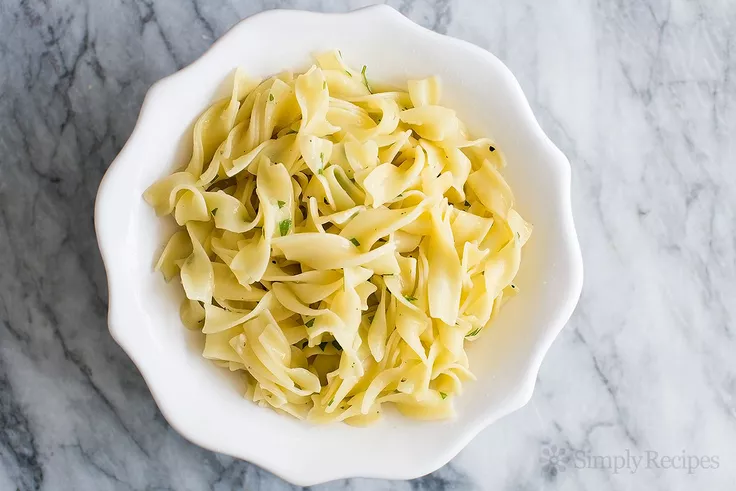

Butter Noodles

When on a time crunch there isn't much that is easier than preparing some
butter noodles. The butterness and simplicity of this recipe will have you
coming back for seconds. You could even cook a side of protein like chicken or streak
to add some extra flavor.
Ingredients
- Noodles
- Butter
- Parmesan
- Parsley
- Salt and Pepper
Steps
- Cook the noodles. Add noodles to boiling water for 5 mintues. Save 1/4 cup of pasta water before draining noodles.
- Add the butter, cheese, and parsley. Place cooked noodles into large bowl and add the butter and parmesan. Stir until the butter has melted. Mix in a tablespoon or two of pasta water. Finally add parsley, salt, and black pepper to liking.